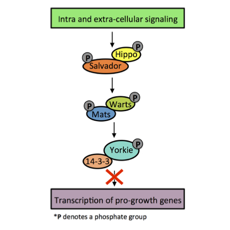

Interstital Lung Disease (ILD) refers to a family of diseases caused by scarring (fibrosis) and inflammation in the lungs. ILDs are progressive and ultimately lead to death through chronic, long-term oxygen deprivation. Idiopathic pulmonary fibrosis (IPF) is the most common ILD. The scientific community does not know what causes IPF, and there is currently no way to stop the disease from progressing.
Image modified from www.lungsandyou.com
My current lab group focuses on better understanding the earliest stages of ILD in the hopes that our work will lead to earlier disease detection and intervention. We are particularly interested in a novel imaging biomarker of subclinical ILD called high attenutation areas (HAA). HAA is a quantitative measure of the amount of scarring in the lungs that is obtained from CT scans using an image-reading software.
My research focuses on using biostatistical and epidemiological methods to better understand the natural variation of HAA in healthy adults. Defining “normal” HAA will help us to identify “abnormal” HAA and isolate those at high risk for developing ILD. In a manuscript that I am currently preparing for publication, I use a multi-ethnic, healthy, never-smoker sample of adults to develop a clinical prediction model that defines upper limits of normal with adjustment for an individual’s demographic and body size characteristics.
The number of people in need of lung trasplant worldwide far exceeds the number of available donor lungs contributing to wait list mortality. Since 2015, about 18% of those waiting for transplant died or were removed from the transplant list because they were too sick to undergo the procedure.
My research in this area focused on identifying overlooked donor pools, such as older lung donors. In a previous paper, I used a survival analysis to demonstrate that there is no difference in mortality among those receiving lungs from donors aged 56-64 when compared with those receiving lungs from donors ages 18-55. We hope that this evidence will encourage physicians to utilize lungs from donors in the 56-64 age category.
As an undergraduate, I participated in the Amgen Scholars Program at University of California Los Angeles where I studied the Hippo signaling pathway in Dr. Julian A. Martinez-Agosto’s lab.

The Hippo signaling pathway is a kinase cascade that regulates tissue growth and size. When activated, the Hippo signaling pathway indicates phosphorylation and deactivation of the transcriptional coactivator Yorkie. Yorkie is a pro-growth gene, and over-expression of Yorkie is associated with tumor growth. Deregulation of the Hippo pathway is seen in a wide range of human cancers including lung cancer, colon cander, ovarian cancer, liver cancer, and prostate cancer, and cancers ralated to the Hippo pathway tend to have particularly low survival rates.
Although the core kinase cascade (shown above) is well understood, many of the upstream and downstream actors remain unknown. My research in this area focused on developing a better understanding of the mechanism by which overexpression of Yorkie leads to tumoringenesis by identifying downstream components of the pathway using a drosopila model.
Pancreatic beta-cells are the major insulin producers in the pancreas, and the amount of beta cells provides important information about an individual’s health. Beta-cell mass in the pancreas provides doctors with information about diseases such as diabetes and insulinoma; too few beta-cells may indicate diabetes, while too many beta-cells may be an indicator of insulinoma.
During my participation in the Gateways to the Laboratory Program at the Weill Cornell/Rockefeller/Sloan-Kettering Tri-Institutional MD/Phd Program, I worked in Dr. Thomas Reiner’s lab where I focused on developing an imaging agent that selectively binds to pancreatic beta-cells in vivo. Read more about this project here.